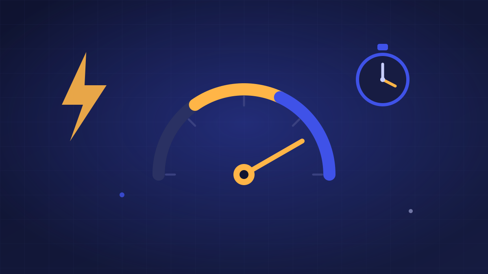
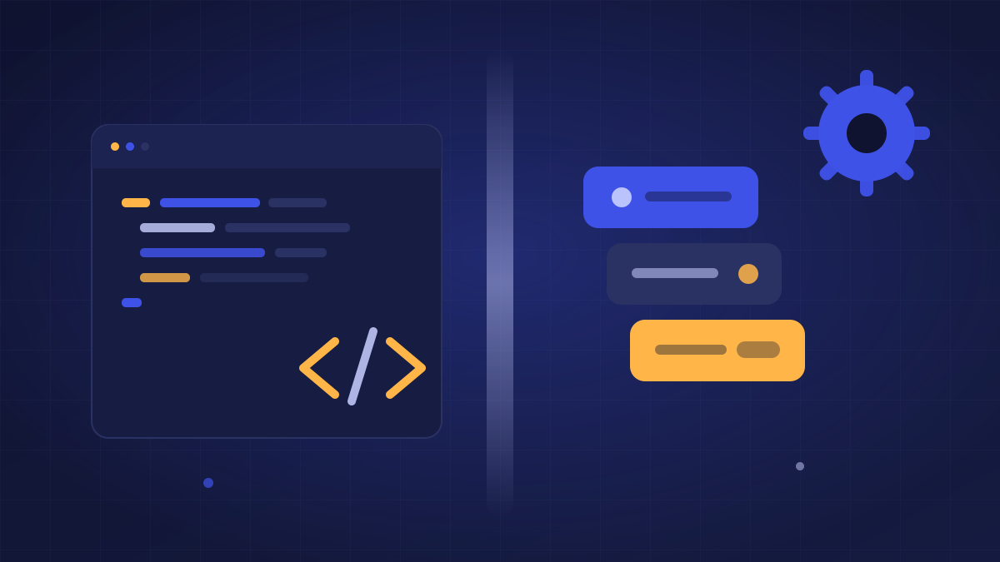

وبلاگ
نوشتههایی ساده درباره طراحی سایت، سئو، سرعت و امنیت؛ همه با منبع.
برای کسبوکارم چه سایتی لازمه؟ چطور سایت وردپرسیات رو امن کنی؟
چطور سایت وردپرسیات رو امن کنی؟
راهنمای انتخاب بین سایت شخصی، شرکتی و فروشگاهی.
بخون
چرا سرعت سایت مهمه؟عددهای رسمی Core Web Vitals و راههای سریعتر شدن سایت.
بخون
وردپرس یا کد نویسی؟کدوم روش به درد پروژه تو میخوره.
بخون سئو پایه برای یه سایت جدیدکارهای ساده برای دیده شدن تو گوگل.
بخون چرا سایتت باید اول روی موبایل خوب باشه؟ایندکس موبایلمحور گوگل یعنی چی.
بخونچطور سایت وردپرسیات رو امن کنی؟مهمترین کارها برای امنیت وردپرس.
بخون